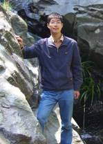

谢卓颖
谢卓颖，博士，副研究员。1982年生，江苏南通人。2005年6月毕业于东南大学生物科学与医学工程学院，获学士学位。2011年3月在东南大学获得生物医学工程博士学位。2011年3月至今就职于东南大学生物科学与医学工程学院，从事科研和教学工作。
研究领域和方向：
1 微纳结构材料与器件
2 生物传感与生物成像
3 即时诊断技术与仪器开发
科研项目及成果：
在J Am. Chem. Soc.、Adv.Mater.、ACSNano、Small、Chem.Soc. Rev.等著名期刊上发表SCI 论文39篇（其中影响因子5.0以上24篇），为The Royal Society ofChemistry撰写著作一章，论文被引360余次。相关的研究成果受到了国际科学媒体和同行的关注，多篇论文并被Nature出版集团的NatureChemistry、NPG-AsiaMaterial、NatureChina以及Scientific American等选为researchhighlight报道。研究成果共申请专利10项，授权4 项。主持国家自然科研基金项目1项，江苏省自然科学基金面上项目1项；参与国家自然科学基金项目3项，军口“863”项目1项（排名第2，副组长）。
荣誉及奖励：
2014年江苏省“青蓝工程”优秀青年骨干教师
2012年东南大学优秀博士学位论文
2009年宝钢优秀学生奖
教学：
主讲本科生课程“微机原理与接口技术”、“微机实验”
代表性论文：
- Z. Y. Xie*, L. Bai, S. W.Huang, C. Zhu, Y. J. Zhao, Z.-Z. Gu*, New Strategy for SurfaceFunctionalization of Periodic Mesoporous Silica Based on meso-HSiO1.5,JAm. Chem. Soc., 2014, 136, 1178-1181. (IF: 11.444)
- Z. Y. Xie, K. D. Cao, Y. J.Zhao*, L. Bai, H. C. Gu, H. Xu, Z.-Z. Gu*, An OpticalNose Chip Based on Mesoporous Colloidal Photonic Crystal Beads, Adv.Mater. 2014, 26, 2413-2418. (IF: 15.409)
- Z. Y. Xie†,*, L. L. Li†,P. M. Liu, F. Y. Zheng, L. Y. Guo, Y. J. Zhao, L. Jin, T. T. Li, Z. Z. Gu*,Self-assembled Coffee-ring Colloidal Crystal for Structural Colored ContactLens, Small, 2014, DOI: 10.1002/smll. 20140271. (†同等第1作者) (IF: 7.514 ) (封面论文)
- L. Bai, Z. Y.Xie*, W. Wang, C. W. Yuan*, Y. J. Zhao, Z. D. Mu, Q.F. Zhong, Z.Z. Gu*, Bio-Inspired Vapor-Responsive Colloidal PhotonicCrystal Patterns by Inkjet Printing, ACS Nano, 2014, 8, 11094-11100. (IF:12.033) (Highlighted by ScientificAmerican: Blow on money to tell if it is counterfeit)
- L. Bai, Z. Y. Xie*, K. D. Cao, Y. J.Zhao, H. Xu, C. Zhu, Z. D. Mu, Q. F. Zhong, Z.-Z. Gu*, HybridMesoporous Colloid Photonic Crystals Array for High Performance Vapor Sensing, Nanoscale,2014, 6, 5680-5685. (IF: 6.739)
- B. F. Ye, H. B. Ding, Y. Cheng, H. C. Gu, Y. J. Zhao*,Z. Y. Xie*, Z.-Z. Gu*, Photonic crystal microcapsules forlabel-free multiplex detection. Adv. Mater., 2014, 26, 3270-3274. (IF:15.409)
- Y. J. Zhao†,*, Z. Y. Xie†, H. C.Gu, C. Zhu, Z.-Z. Gu*, Bio-inspired variable structural colormaterials, Chem. Soc. Rev., 2012, 41, 3297-3317. (†同等第一作者) (IF: 30.425)
- Z. Y. Xie, E. J. Henderson,O. Dag, W. D. Wang, J. E. Lofgreen, C. Kubel, T. Scherer, P. M. Brodersen,Z.-Z. Gu*, G. A. Ozin*, Periodic Mesoporous Hydridosilica– Synthesis of an “Impossible” Material and its Thermal Transformation intoBrightly Photoluminescent Periodic Mesoporous Nanocrystal Silicon-SilicaComposite, J Am. Chem. Soc., 2011, 133, 5094-5102. (IF: 11.444) (Highlighted by Nature Chemistry: Nothing isimpossible)
- Z. Y. Xie, Y. J. Zhao, L.G. Sun, X. W. Zhao, Y. Shao, Z.-Z. Gu*, Photo-bleaching ImmunityEncoded Photonic Suspension Array for Label-Free Multiplex Analysis, Chem.Commun., 2009, 45, 7012-7014. (IF: 6.718)
- Z. Y. Xie, L. G. Sun, G. Z.Han, Z.-Z. Gu*, Optical Switching of Birefringent Photonic Crystal, Adv.Mater., 2008, 20, 3601-3604. (IF: 15.409) (Highlighted by NPG Asia Materials: Photoniccrystals: Stretching out)
- Z. B. Liu†,Z. Y. Xie†, X. W. Zhao, Z.-Z. Gu*, PhotonicSuspension Array for Label-Free High-throughput Assay, J Mater. Chem., 2008, 18,3309-3312. (†同等第1作者) (IF: 6.626)
每年拟招收2-3名硕士研究生，欢迎生物医学工程相关背景的学生报考！
联系方式：email: zyxie@seu.edu.cn电话：025-83795632-802